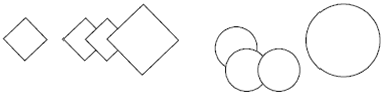
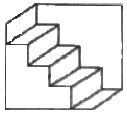
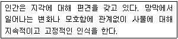

시각디자인산업기사 (2018-09-15 기출문제)
1과목: 색채학
1. 가법혼색에서 Red의 물리학적 보색은?
- Magenta
- Blue
- Green
- Cyan
(정답률: 55%)

2. 일반색명이라고도 하며, 색상, 명도, 채도를 표시하는 색명은?
- 관용색명
- 전통색명
- 계통색명
- 유행색명
(정답률: 66%)
3. 색의 3속성에 포함되지 않는 것은?
- 색상
- 대비
- 명도
- 채도
(정답률: 96%)
4. 색료를 혼색한 결과 중 틀린 것은?
- Magenta + Cyan = Blue
- Red + Blue +Green = Black
- Green + Magenta = Yellow
- Yellow + Magenta = Red
(정답률: 61%)
5. 색채가 지닌 연상 감정 중 빛을 연상시키며, 팽창되는 느낌을 갖게 하는 색은?
- 보라
- 연두
- 자주
- 노랑
(정답률: 97%)
6. 오스트발트 색체계의 설명 중 틀린 것은?
- 헤링의 4원색설을 기본으로 하였다.
- 백색량, 흑색량, 순색량의 합을 100%로 하였다.
- 색입체의 모양은 복원추체이다.
- 색에 따라서 혼합량의 합은 일정치 않다.
(정답률: 64%)
7. 다음 중 선명한 유채색과 무채색의 배색 효과는?
- 경쾌하고 강한 배색
- 침착하고 정적인 배색
- 온화한 느낌의 배색
- 무겁고 침착한 배색
(정답률: 74%)
8. 다음 중 일반색명에 해당되는 것은?
- 올드로즈
- 호박색
- 개나리색
- 연한 파랑
(정답률: 92%)
9. 천장이 낮을 경우 높아 보이게 할 수 있는 가장 효과적인 색은?
- 밝은 한색 계열
- 밝은 난색 계열
- 어두운 한색 계열
- 어두운 난색 계열
(정답률: 68%)
10. 색채조절을 위해 만족시켜야 할 요인으로 가장 거리가 먼 것은?
- 유행성을 높인다.
- 능률성을 높인다.
- 안전성을 높인다.
- 쾌적성을 높인다.
(정답률: 86%)
11. 색의 지각적 효과에 대한 설명으로 맞는 것은?
- 장파장의 색상이 후퇴해 보인다.
- 명도차가 큰 색일수록 시인성이 높다.
- 한색이 난색보다 주목성이 높다.
- 명도가 낮은 색이 팽창해 보인다.
(정답률: 85%)
12. 색상환을 만들 때 가장 고려해야 할 사항은?
- 색의 명도를 조절하여 배치한다.
- 색은 감각적으로 등차가 있게 배치한다.
- 파장에 따른 색의 식별능력이 다르지 않으므로 기본색을 설정할 필요가 없다.
- 색상환에서 보색관계는 고려 할 필요가 없다.
(정답률: 52%)
13. 색의 연상에 대한 설명으로 옳은 것은?
- 색의 연상은 명도가 낮을수록 구체적이다.
- 색에 대한 구체적 연상에는 중간색보다 선명한색이 연상어가 많다.
- 노랑은 레몬, 파랑은 하늘을 떠올리게 되는 것은 추상적 연상의 사례이다.
- 현실의 사물과 연결되는 구체적인 연상에는 흰색-청결, 검정-불안 등이 있다.
(정답률: 59%)
14. 한국산업표준(KS)에서 규정한 톤의 명칭이 아닌 것은?
- 선명한(vivid)
- 밝은(light)
- 어두운(dark)
- 중간(moderate)
(정답률: 86%)
15. 문(P. Moon)과 스펜서(D. E. Spencer)의 색채 조화론에서 유사조화와 대비조화 사이에 있는 범위는?
- 제1부조화
- 동일조화
- 제2부조화
- 눈부심
(정답률: 53%)
16. 감성적으로 다루어졌던 색채조화론을 과학적으로 설명할 수 있도록 정량적 색채 조화론을 제시한 사람은?
- 문ㆍ스펜서
- 슈브럴
- 오스트발트
- 비렌
(정답률: 60%)
17. 오스트발트의 색채조화론 중 '기호의 뒤문자가 동일한 색들은 서로 조화된다.' 는 것과 관련된 것은?
- 등백계열 조화
- 등흑계열 조화
- 등순계열 조화
- 무채색에 의한 조화
(정답률: 58%)
18. 맥스웰(James C. Maxwell)의 회전판 실험을 통한 결과로 알 수 있는 특징이 아닌 것은?
- 혼합된 색의 명도는 혼합하려는 색들의 중간 명도가 된다.
- 혼합된 색상은 각 색의 면적에 영향을 받는다.
- 회전혼색은 물체색을 통한 혼색이므로 감법혼색에 속한다.
- 보색관계인 두 색의 회전혼색은 무채색이된다.
(정답률: 62%)
19. 기업색채(Corporate Color)를 선택하는 요점에 관한 설명 중 가장 옳은 것은?
- 모든 사람들이 좋아할 수 있는 색으로서 명도, 채도가 높은 색채
- 주위 환경과의 조화보다 눈에 탁 들어와 시선을 끌 수 있는 색채
- 눈에 띄기 쉽고 타사(다른 회사)와의 차별성이 뛰어난 색채
- 관리하기가 다소 어려워도 보기에 좋은 색채
(정답률: 89%)
20. 다음 중 청록의 먼셀(Munsell) 기호는?
- 5G 5/8
- 5B 4/8
- 5BG 5/6
- 5PB 3/12
(정답률: 87%)
2과목: 인쇄 및 사진기법
21. 다음 중 책등의 3형식에 해당되지 않는 것은?
- 배킹(backing)
- 타이트백(tight back)
- 홀로백(hollow back)
- 플렉시블백(flexible back)
(정답률: 63%)
22. 사각 밖에서 오는 유해광선을 막고 선명한 화상을 얻기 위하여 사용하는 카메라 액세서리는 ?
- 스트로보
- 접사 렌즈
- 렌즈 후드
- 리어 컨버터
(정답률: 78%)
23. 평판 인쇄의 특징에 대한 설명으로 옳지 않은 것은?
- 윤전인쇄가 가능하다.
- 볼록판 인쇄에 비해 인쇄물이 부드러운 느낌을 준다.
- 대부분 직접인쇄 방식이므로 잉크의 전이량이 많다.
- 같은 높이의 판면으로 화학적인 원리에 의하여 인쇄하는 방법이다.
(정답률: 63%)
24. 바라이타 인화지에 비해 RC(Resine Coated) 인화지가 수세 시간이 짧은 이유로 가장 옳은 것은?
- RC 인화지는 정착공정에서 1차 수세 작업이 이루어지기 때문
- RC 인화지는 섬유질이 흡수와 탈수가 잘되어 있어 수세 시간이 단축되기 때문
- 인화지 양쪽에 폴리에틸렌이 칠해져 있어 종이의 섬유질 사이에 약품이 들어가지 못하기 때문
- RC 인화지 현상 시 약품이 인화지에 침투하지 못하도록 황산바륨(BaSO4)이 도포되어 있기 때문
(정답률: 46%)
25. 평판인쇄 시 이용되는 통꾸밈 방법 중 판통, 고무통, 압통의 지름을 똑같이 하는 방법은?
- 동경(equal diameter)법
- 트루 롤링(true rolling)법
- 굳은 패킹(hard packing)법
- 중간 패킹(semi hard packing)법
(정답률: 61%)
26. 촬영된 필름의 잠상을 가시상으로 볼 수 있게 하는 공정은?
- 정착
- 현상
- 수세
- 건조
(정답률: 84%)
27. 프리즘을 투과한 빛이 각각의 굴절각의 차이로 여러 가지 색으로 나누어지는 현상은?
- 분산
- 회절
- 편광
- 건조
(정답률: 75%)
28. 제판용 드럼 스캐너에 사용하는 Ar 레이저의 주파장(Blue 와 Green 빛)은 각각 몇 nm정도인가?
- Blue : 338, Green : 414
- Blue : 488, Green : 514
- Blue : 588, Green : 614
- Blue : 688, Green : 714
(정답률: 43%)
29. 다음 중 일반적으로 잉크의 점도(poise)가 가장 낮은 것은?
- 플렉소 잉크
- 스크린 잉크
- 오목판 잉크
- 오프셋 윤전 잉크
(정답률: 45%)
30. 건축물이나 실내 인테리어 사진을 촬영할 때 수직, 수평선이 왜곡되어 일그러지거나 원근감이 과장되는 현상을 줄이기 위하여 사용하는 렌즈는?
- 어안 렌즈
- 매크로 렌즈
- 연초점 렌즈
- 시프트 렌즈
(정답률: 51%)
31. 다음 중 인쇄의 5요소에 속하지 않는 것은?
- 원고(copy)
- 피인쇄체(paper)
- 제 책(book binding)
- 인쇄판(printing plate)
(정답률: 85%)
32. 색온도 조절용 필터 중에서 색온도를 내려주는 필터의 색은?
- Blue
- Red
- Amber
- Green
(정답률: 42%)
33. 다음 중 문자의 크기가 다른 것은?
- 1급
- 1치
- 1/4mm
- 1 Point
(정답률: 72%)
34. 내용물을 보호할 목적으로 포장에 많이 사용되는 종이는?
- 아트지
- 코튼지
- 킬레이트지
- 크라프트지
(정답률: 80%)
35. 다음 중 커플러 (coupler)와 가장 관계가 있는 것은?
- 현상제
- 발색제
- 표백제
- 정착제
(정답률: 58%)
36. 스튜디오 조명으로 부드러운 조명효과를 얻고자 할 때의 방법으로 적절하지 않은 것은?
- 소프트 박스를 사용한다.
- 조명의 광량을 낮춘다.
- 반사판을 이용하여 간접조명을 한다.
- 트레싱지를 조명 앞에 씌워 사용한다.
(정답률: 64%)
37. 확대기 종류 중에서 콘트라스트가 가장 높게 나타나는 확대기는?
- 산광식 확대기
- 집산광식 확대기
- 집광식 확대기
- 반사식 확대기
(정답률: 64%)
38. 거리계 연동식 카메라(Range finder camera)의 장점이 아닌 것은?
- 시차가 생기지 않는다.
- 가볍고 휴대하기 편리하다.
- 정확한 초점을 맞출 수 있으며, 선예한 화상을 얻을 수 있다.
- 촬영 시 셔터의 진동이 적고, 플래시 촬영시 셔터 속도에 제한을 받지 않는다.
(정답률: 48%)
39. 컬러 필름 감색법의 원리에 의해 사용되는 3색은?
- Red, Green, Black
- Red, Green, Cyan
- Yellow, Magenta, Blue
- Yellow, Magenta, Cyan
(정답률: 79%)
40. 일반 촬영용 네거티브 필름의 가장 적당한 콘트라스트 인덱스(Contrast Index)는?
- 0.1~0.3
- 0.2~0.4
- 0.5~0.6
- 0.6~0.7
(정답률: 48%)
3과목: 시각디자인론
41. 고결, 상승을 연상시키며 도전과 중력을 상징하는 것은?
- 수평선
- 수직선
- 점선
- 곡선
(정답률: 88%)
42. 수출산업 육성정책의 영향으로 산업디자인의 인식이 높아지고, 제1회 대한민국상공전람회가 개최되는 등 한국 디자인 발전의 기초가 마련된 시기는?
- 1950년대
- 1960년대
- 1970년대
- 1980년대
(정답률: 60%)
43. 그림에 나타나는 공통적인 조형원리로 적합하지 않은 것은?

- 반복
- 이동
- 균형
- 중첩
(정답률: 73%)
44. 마케팅 전략 수립을 위한 4P 믹스로 이루어진 것은?
- 제품, 가격, 유통, 촉진
- 가격, 생산, 촉진, 매장
- 생산, 제품, 지역, 시장
- 가격, 촉진 계절, 장소
(정답률: 88%)
45. 다음 형태의 분류 중 자연적 형태와 인공적 형태를 지칭하는 각각의 다른 말은?
- 비구상적 형태-양식화 형태
- 비구상적 형태-유기적 형태
- 유기적 형태-기능적 형태
- 양식화 형태-기능적 형태
(정답률: 75%)
46. 독일공작연맹(DWB)이 근현대 사회에 끼친 가장 중요한 내용은?
- 제품의 쓸모보다는 아름다움의 중요성 강조
- 제품 생산의 표준화, 규격화, 합리화 운동전개
- 제품 생산 시 기계보다는 공예의 중요성 전파
- 생산 제품의 표준화보다는 다양성 강조
(정답률: 83%)
47. 제도를 할 때 가는 실선으로 표시하지 않는 것은? (한국산업표준 KS 기준)
- 치수를 기입하는 선
- 보이지 않는 부분을 나타내는 선
- 도형의 중심선을 간략하게 표시하는 선
- 회전 단면에 사용하는 선
(정답률: 63%)
48. 다음 그림에서 느껴지는 착시 현상은?

- 반전실체의 착시
- 간결화의 착시
- 대비의 착시
- 수직 수평의 착시
(정답률: 71%)
49. 소비자의 구매심리 작용인 아이드마(AIDMA) 법칙의 5단계와 거리가 먼 것은?
- Approach
- Interest
- Desire
- Memory
(정답률: 63%)
50. '디자인 관리'의 의의와 관련이 없는 것은?
- 계획
- 조직
- 조정 및 통제
- 세무 및 감사
(정답률: 83%)
51. 디자인 과정을 위한 디자인 매니지먼트의 실천단계가 아닌 것은?
- 조직화(organizing)단계
- 동기화(motivation)단계
- 시각화(visualization)단계
- 통제화(controlling)단계
(정답률: 36%)
52. 바우바우하우스가 소재한 도시(제1기-제2기)로 옳은 것은?
- 베를린 - 슈트가르트
- 데사우 - 파리
- 바이마르 - 데사우
- 바이마르 - 함부르크
(정답률: 70%)
53. 미술공예운동의 영향을 받아 곡선적이며 동적인 식물무늬가 많은 장식위주의 디자인 운동이 아닌 것은?
- 팝아트(Pop Art)
- 유겐트스틸(Jugendstil)
- 스틸레 리버티(Stile Liberty)
- 시세션(Secession)
(정답률: 68%)
54. 2차원 시각디자인의 기본 요소에 해당되지 않는 것은?
- 타이포그래피
- 사진
- 일러스트레이션
- 디스플레이
(정답률: 87%)
55. 모든 사물은 도형(figure)과 바탕(ground)으로 이루어진다. 다음 중 도형이 되기 쉬운 조건이 아닌 것은?
- 면적이 작은 부분이 도형이 되기 쉽다.
- 좌우대칭인 부분이 도형이 되기 쉽다.
- 둘러싸여 막혀 있는 영역이 되기 쉽다.
- 무늬가 없는 부분이 도형이 되기 쉽다.
(정답률: 61%)
56. 디자인의 영역을 일반적으로 크게 3가지 분야로 구분할 때 적절하지 않는 것은?
- 제품디자인
- 인테리어 디자인
- 시각디자인
- 환경디자인
(정답률: 76%)
57. 오늘날의 CI 시스템을 최초로 도입한 독일의 디자이너와 그가 이를 적용해 디자인한 회사가 올바르게 연결된 것은?
- 앙리 반데 벨데 - 바이마르 미술/공예학교
- 미하엘 토네트 - 센추리 길드 (Century Guild)
- 요제프 호프만 - 비엔나 공예제작소
- 피터 베렌스 - 독일 전기 카르텔 (AEG)
(정답률: 37%)
58. “순수한 조형적 표현은 선, 면, 색채의 관계에 의해 창조된다.”며 이상적, 합리적, 조형세계를 역설한 화가는?
- 피카소
- 몬드리안
- 폴 클레
- 칸딘스키
(정답률: 78%)
59. 건축은 인간이 사는 기계로 생각하였으며 가구를 건축의 주 공간으로 취급한 건축가는 ?
- 그로피우스(Gropius, W.)
- 르 꼬르뷔제(Le Corbusier)
- 모홀리 나기(Moholy-Nagy)
- 요한네스 이텐(Johannes Itten)
(정답률: 44%)
60. 도형의 중심을 표시하거나 단면부분의 절단 위치를 표시하는데 사용하는 선은?
- 가는 파선
- 1점 쇄선
- 2점 쇄선
- 굵은 실선
(정답률: 56%)
4과목: 시각디자인실무 이론
61. 기업의 제품개발, 광고전개, 유통설계를 중심으로 한 활동이 마케팅이다. 이것은 궁극적으로 무엇을 위한 것인가?
- 사회적 이해 증진
- 이윤추구
- 소비자 교육
- 문화생활보급
(정답률: 91%)
62. 신제품 계획 과정과 관련이 없는 것은?
- 판매 촉진
- 아이디어 산출
- 영업분석
- 시장실험
(정답률: 57%)
63. 모델을 이용한 섹스어필 광고를 게재한 이후, 소비자의 기억 속에 제품은 사라지고 모델만 남게 되었다면 이는 다음의 수용자 지각요인 중 어떤 것에 해당되는가?
- 부드러운 연속성의 요인
- 바탕과 도형의 전의 요인
- 근접성과 유사성의 요인
- 동일운명의 요인
(정답률: 65%)
64. 전파매체 중에서 TV광고의 장점이 아닌 것은?
- 고정 시청자에게 광고를 정기적, 반복적으로 노출 시킬 수 있다.
- 타 매체에 비해 비용이 가장 저렴하다.
- 각 매체 중 접촉률이 가장 높다.
- 광고에 대한 주목률이 높다.
(정답률: 89%)
65. 시지각에서의 항상성 현상이 아닌 것은?
- 크기의 항상성
- 동기의 항상성
- 형의 항상성
- 밝음의 항상성
(정답률: 71%)
66. TV 방송에서 스테이션 브레이크(station break)에 나오는 화면으로 화면의 3/4은 방송국 이름을 고지이며, 1/4은 상업 광고에 사용하게 되는데 이를 무엇이라 하는가?
- TV program 광고
- ID 카드 광고
- Spot 광고
- Animation 광고
(정답률: 45%)
67. 같은 상황에서 동일한 사물을 보아도 보는 사람에 따라 각기 다르게 지각되는 내부적 요인으로 거리가 먼 것은?
- 욕구
- 흥미
- 환경
- 가치관
(정답률: 57%)
68. 기호화 된 광고메시지를 개인이나 집단에게 송신, 전달하는 수단은?
- 광고매체
- 광고기획
- 광고제작
- 광고집행
(정답률: 71%)
69. 다음 중 포장의 기능이 아닌 것은?
- 보존성
- 편리성
- 생산성
- 상품성
(정답률: 74%)
70. 손으로 글자를 쓰는 일과 쓰여진 글자 또는 글자표현의 의미를 가리키는 용어는?
- 타입 스타일 (Type style)
- 폰트 (Font)
- 레터링 (Lettering)
- 타입 페이스 (Type face)
(정답률: 80%)
71. 다음에서 설명하는 형과 형태의 지각에 관한 용어는?

- 동일성
- 착시성
- 공간성
- 항상성
(정답률: 72%)
72. DTP 이전에는 오려내기라 불렸던 방법으로, DTP에서 다색 인쇄시 K(검정)판과 겹치는 부분에 있는 다른 색을 빼내는 것은?
- 블리드 (bleed)
- 녹아웃 (knock-out)
- 트리밍 (trimming)
- 오버프린트 (overprint)
(정답률: 60%)
73. 문자의 굵기, 장식적 변화, 폭, 높이 등을 바꾸어 다양화시킨 동일 계통의 서체 집합을 나타내는 용어는?
- 레터링(Lettering)
- 패밀리(Family)
- 이니셜(Initial)
- 타입페이스(Typeface)
(정답률: 66%)
74. 크기를 확대 또는 축소를 해도 이미지데이터의 해상도가 손상되지 않는 백터파일 형식은?
- BMP
- TIFF
- PCX
- EPS
(정답률: 66%)
75. 타이포그래피에서 본문용 타입(Type)의 특성으로 가장 중요한 것은?
- 가독성
- 주목성
- 심미성
- 적정성
(정답률: 80%)
76. 자사 상품이 시장 속에 또는 잠재고객의 마음속에 유리한 이미지로 자리 잡도록 계획하는 광고 전략은?
- 기업이미지(corporate images)
- 마케팅믹스(marketing mix)
- 타깃(target)
- 포지셔닝(positioning)
(정답률: 69%)
77. 기업의 신제품 개발 전략 중에서 브랜드 확장 전략이란?
- 새로운 상표명을 사용하여 새로운 제품군에 진출하는 경우
- 한 기업에서 생산되는 전체 품목에 동일하게 브랜드를 부착하는 경우
- 한 제품시장 내에서 성공을 거둔 기존 브랜드를 다른 제품군의 신제품에 부착하는 경우
- 기존의 제품군 내에서 포장디자인을 바꾸어 새로운 이미지 개선을 시도하는 경우
(정답률: 56%)
78. 일반 산업재 상품의 광고를 위한 가장 효과적인 커뮤니 케이션 방법은?
- 이성적 소구(Rational appeals)
- 감성적 소구(Emotional appeals)
- 도덕적 소구(Moral appeals)
- 애국적 소구(Patriotic appeals)
(정답률: 54%)
79. 일반적으로 모니터의 크기는 어느 것으로 결정하는가?
- 화면의 높이
- 화면의 가로 길이
- 화면의 해상도 수
- 화면의 대각선 길이
(정답률: 78%)
80. 다음 중 포장 형태를 이루는 기본적인 4가지 재질에 속하는 것은?
- 종이, 플라스틱, 유리, 금속
- 종이, 점토, 플라스틱, 섬유
- 종이, 보자기, 플라스틱, 피혁
- 종이, 유리, 목재, 실리콘
(정답률: 75%)